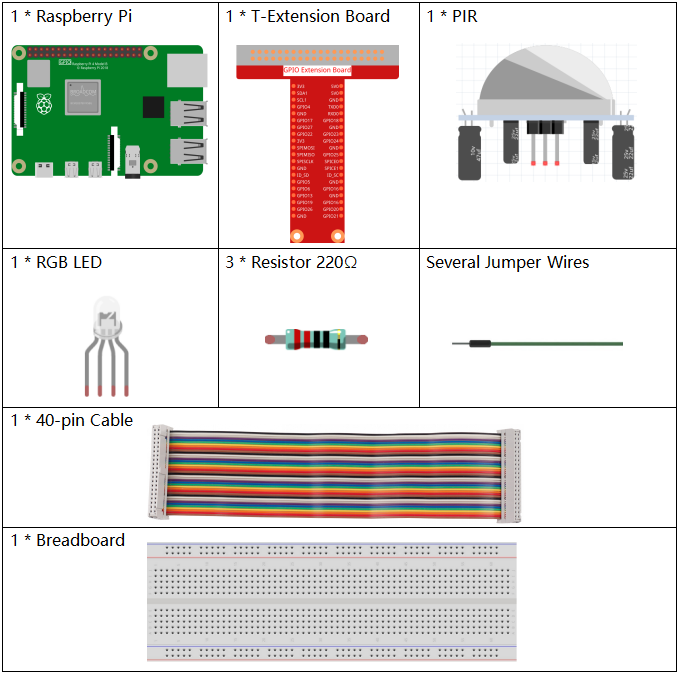

注釈
こんにちは、SunFounder Raspberry Pi & Arduino & ESP32 Enthusiasts Community on Facebookへようこそ！Raspberry Pi、Arduino、ESP32を愛好する仲間たちと一緒に、これらの技術を深く探求しましょう。
参加する理由
専門家のサポート: コミュニティやチームの助けを借りて、購入後の問題や技術的な課題を解決します。
学びと共有: スキルを向上させるためのヒントやチュートリアルを交換します。
独占プレビュー: 新製品の発表やプレビューに早期アクセスできます。
特別割引: 最新の製品に対する独占割引を楽しめます。
フェスティブプロモーションとギブアウェイ: ギブアウェイやフェスティブプロモーションに参加できます。
👉 私たちと一緒に探索と創造を始める準備はできましたか？[ここ]をクリックして、今日参加しましょう！
2.2.4 PIR
イントロダクション
このプロジェクトでは、人間の赤外線受動型センサーを使用してデバイスを作成します。誰かがLEDに近づくと、自動的に点灯します。離れると、ライトは消灯します。この赤外線モーションセンサーは、人間や動物が放出する赤外線を検出するセンサーです。
コンポーネント
回路図

実験手順
ステップ1: 回路を構築します。

ステップ2: コードのフォルダに移動します。
cd ~/davinci-kit-for-raspberry-pi/nodejs/
ステップ3: コードを実行します。
sudo node pir.js
コードが実行された後、PIRは周囲を検出し、誰かが通り過ぎるとRGB LEDが黄色に光ります。PIRモジュールには2つのポテンショメータがあり、一つは感度を調整し、もう一つは検出距離を調整します。PIRモジュールを効果的に動作させるためには、これらのポテンショメータを調整する必要があります。
コード
const Gpio = require('pigpio').Gpio;
const pirPin = new Gpio(17, {
mode: Gpio.INPUT,
pullUpDown: Gpio.PUD_DOWN,
edge: Gpio.EITHER_EDGE
}) // PIRはピン17に接続されています
const redPin = new Gpio(18, { mode: Gpio.OUTPUT, })
const greenPin = new Gpio(27, { mode: Gpio.OUTPUT, })
const bluePin = new Gpio(22, { mode: Gpio.OUTPUT, })
//'Red':18, 'Green':27, 'Blue':22
var p_R, p_G, p_B
// すべてのLEDをPWMチャネルとして設定し、周波数を2KHzに設定
p_R = redPin.pwmFrequency(2000)
p_G = greenPin.pwmFrequency(2000)
p_B = bluePin.pwmFrequency(2000)
// すべての初期値を0に設定
p_R.pwmWrite(0)
p_G.pwmWrite(0)
p_B.pwmWrite(0)
// 値をマッピングするためのMAP関数を定義。0~255から0~100へのマッピングなど
function MAP(x, in_min, in_max, out_min, out_max) {
return (x - in_min) * (out_max - out_min) / (in_max - in_min) + out_min
}
// 色を設定するための関数を定義
function setColor(color) {
// 入力されたカラー値で3つのLEDの輝度を設定
// 'color'変数から色を分離
R_val = (color & 0xFF0000) >> 16
G_val = (color & 0x00FF00) >> 8
B_val = (color & 0x0000FF) >> 0
// カラー値を0~255から0~100にマッピング
R_val = MAP(R_val, 0, 255, 0, 100)
G_val = MAP(G_val, 0, 255, 0, 100)
B_val = MAP(B_val, 0, 255, 0, 100)
// マッピングされたデューティサイクル値を対応するPWMチャネルに割り当てて輝度を変更
p_R.pwmWrite(R_val)
p_G.pwmWrite(G_val)
p_B.pwmWrite(B_val)
//print ("color_msg: R_val = %s, G_val = %s, B_val = %s"%(R_val, G_val, B_val))
}
pirPin.on('interrupt', (level) => {
if (level) {
setColor(0xFFFF00)
}else{
setColor(0x0000FF)
}
});
process.on('SIGINT', function () {
p_R.pwmWrite(0)
p_G.pwmWrite(0)
p_B.pwmWrite(0)
process.exit();
})
コードの説明
この例のコードは、2.1.1 Button と 1.1.2 RGB LED の組み合わせです。詳細な説明は不要です。
現象の写真